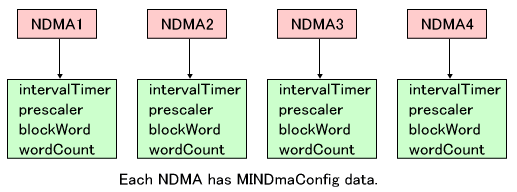
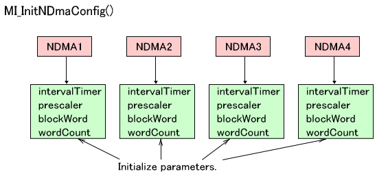
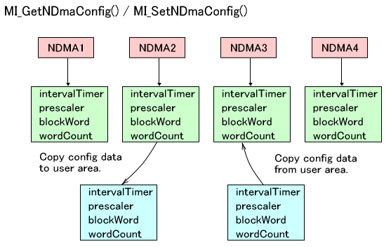
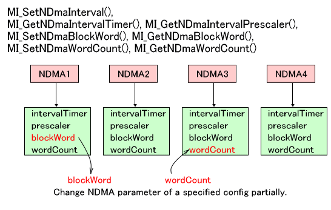
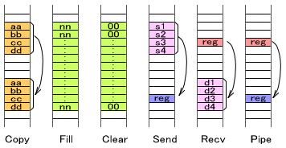

In addition to the four DMA channels that were available with NITRO, the TWL hardware has four new DMA channels. The new DMA allows more precise configuration than was possible with the legacy DMA. This section describes the new DMA.
The new DMA uses the members of the MINDmaConfig structure as parameters when it is running. This structure contains information that is not likely to change for each DMA operation. It does not contain values that will change on a case-by-case basis, such as the overall transfer size or the source/destination addresses for the transfer.
Specifically, the structure contains the following values.
| Member Name | Description | Related Register | Initial Value |
|---|---|---|---|
intervalTimer |
Interval timer for block transfers. | d15-0 in DMAxBCNT | MI_NDMA_NO_INTERVAL |
prescaler |
Prescaler of interval timer for block transfers. | d17-16 in DMAxBCNT | MI_NDMA_INTERVAL_PS_1 |
blockWord |
Number of words in the block transfer. | d19-16 in DMAx_CNT | MI_NDMA_BWORD_1 |
wordCount |
Number of words in the transfer. | DMAxWCNT | MI_NDMA_AT_A_TIME |
Separate structures are provided for each of the four new DMA channels within the library, so DMA transfers can be performed using different settings for each channel.

Call the MI_InitNDmaConfig function to initialize the MINDmaConfig structure members for all NDMA channels. You do not have to call this function directly because it is called from the MI_InitNDma function (which in turn is called from the OS_Init function).

Call the MI_GetNDmaConfig function to copy the MINDmaConfig structure set for the current new DMA channel to a MINDmaConfig structure prepared by the user (developer). Call the MI_SetNDmaConfig function to copy a MINDmaConfig structure prepared by the user (developer) to the MINDmaConfig structure set for the new DMA channel.

The MI_SetNDmaInterval, MI_GetNDmaIntervalTimer, MI_GetNDmaIntervalPrescaler, MI_SetNDmaBlockWord, MI_GetNDmaBlockWord, MI_SetNDmaWordCount, and MI_GetNDmaWordCount functions overwrite or get some of the members of the MINDmaConfig structure set for the new DMA.

To initialize settings that have been overwritten, use the MI_InitNDmaConfig function described earlier.
The following instructions exist for the new DMA.
MI_NDmaCopy* Uses the new DMA to copy.MI_NDmaFill* Uses the new DMA to fill with the specified data.MI_NDmaClear* Uses the new DMA to fill with 0s.MI_NDmaSend* Uses the new DMA to send data to a fixed address.MI_NDmaRecv* Uses the new DMA to reads data from a fixed address.MI_NDmaPipe* Uses the new DMA to send data from a fixed address to another fixed address.
Reading or writing data from a fixed address makes frequent use of operations on the I/O registers.

For each of these, there are derivative functions that have minor differences in terms of their operation. Below is an example that explains the MI_NDmaCopy* functions, but the naming conventions shown below apply to other functions as well.
Functions that end in Async are asynchronous functions. Conversely, functions that do not are synchronous functions. Synchronous functions are guaranteed to wait for new DMA operations to complete, but control leaves asynchronous functions without waiting for completion. Asynchronous functions can find out that a DMA operation has completed, either by setting a callback function that is called when the operation completes, or by using the MI_IsNDmaBusy function, which determines whether the given new DMA channel is in use. The MI_WaitNDma function waits until the given new DMA channel becomes usable.
Functions that include Ex are provided with an external MINDmaConfig structure. Conversely, functions without "Ex" use the MINDmaConfig structures that are maintained by the library and already configured. Functions with Ex are effective for initiating temporary DMA operations using different parameters from those that are normally used.
Functions that end in _Dev synchronize the start of DMA operations with an interrupt from a peripheral device. Conversely, functions without "_Dev" start operations immediately. See DMA Start Timing for the values that can be set as peripheral devices.
Functions that end in _SetUp only perform configuration, and do not start DMA operations. The actual DMA operations start after MI_NDmaRestart is called.
These four specifiers yield a total of 16 variants of the MI_NDmaCopy* function.
| Functions | Synchronous/Asynchronous | MINDmaConfig | Start DMA |
|---|---|---|---|
No _SetUp (Run DMA) |
|||
MI_NDmaCopy |
Synchronous | Stored in the library | Immediately |
MI_NDmaCopyAsync |
Asynchronous | Stored in the library | Immediately |
MI_NDmaCopyEx |
Synchronous | User-defined | Immediately |
MI_NDmaCopyExAsync |
Asynchronous | User-defined | Immediately |
MI_NDmaCopy_Dev |
Synchronous | Stored in the library | Interrupt from peripheral device |
MI_NDmaCopyAsync_Dev |
Asynchronous | Stored in the library | Interrupt from peripheral device |
MI_NDmaCopyEx_Dev |
Synchronous | User-defined | Interrupt from peripheral device |
MI_NDmaCopyExAsync_Dev |
Asynchronous | User-defined | Interrupt from peripheral device |
With _SetUp (Only perform configuration for running DMA) |
|||
MI_NDmaCopy_SetUp |
Synchronous | Stored in the library | Immediately |
MI_NDmaCopyAsync_SetUp |
Asynchronous | Stored in the library | Immediately |
MI_NDmaCopyEx_SetUp |
Synchronous | User-defined | Immediately |
MI_NDmaCopyExAsync_SetUp |
Asynchronous | User-defined | Immediately |
MI_NDmaCopy_Dev_SetUp |
Synchronous | Stored in the library | Interrupt from peripheral device |
MI_NDmaCopyAsync_Dev_SetUp |
Asynchronous | Stored in the library | Interrupt from peripheral device |
MI_NDmaCopyEx_Dev_SetUp |
Synchronous | User-defined | Interrupt from peripheral device |
MI_NDmaCopyExAsync_Dev_SetUp |
Asynchronous | User-defined | Interrupt from peripheral device |
Call MI_StopNDma to stop the specified new DMA channel.
Call MI_StopAllNDma to stop all new DMA channels. This function calls MI_StopNDma for the new DMA channels 0-3 in order.
You can select the the arbitration method used between the new DMA channels. Two options are available: the fixed method and the round-robin method.
With the fixed method, fixed priorities are set. If a request for a DMA channel is issued whose priority is higher than the DMA channel that is currently running, the current request is paused once the block transfer has completed for the number of words specified in WORDCNT, and the DMA transfer for the higher-priority DMA channel is run. Conversely, if a request is issued for a DMA channel that is lower in priority than the one currently running, the incoming request is put on hold.
With the round-robin method, the MI library looks up the DMA channel during the startup request, and once the block transfer has completed for WORDCNT words (this number is specified for each general-purpose DMA channel), the ownership rights to the AHB bus alternates in round-robin fashion in the order DMA0, DMA1, DMA2, DMA3, DSP or ARM9, DMA0, DMA1, DMA2, ... (including all DMA channels for which there are DMA transfer requests).
When using the round-robin method, you can set the number of cycles for which access is possible during requests for the AHB bus of the DSP or ARM9.
The following function is used to configure the arbitration method and the number of cycles that are accessible when the round-robin method is used. MI_SetNDmaArbitrament
The following functions are used to get the values that are currently set.MI_GetNDmaArbitrament
MI_GetNDmaArbitramentRoundRobinCycle
The priorities for the AHB bus are shown below.
If using the fixed method for DMA arbitration:
Old DMAC0 > Old DMAC1 > Old DMAC2 > Old DMAC3 > New DMAC0 > New DMAC1 > New DMAC2 > New DMA3 > DSP > ARM9
If using the round-robin method for DMA arbitration:
The new DMA priorities are removed, and the bus ownership is passed around in the following order:
Old DMAC0 > Old DMAC1 > Old DMAC2 > Old DMAC3 > (New DMAC0 = New DMAC1 = New DMAC2 = New DMA3) > DSP > ARM9
Among the new DMA functions, functions that end in _Dev, such as MI_NDmaCopy_Dev, can make the timing of starting DMA dependent on a startup request based on an interrupt from a peripheral device. Functions that do not end in _Dev start immediately.
You can specify this by passing the MINDmaDevice type value (u32 typedef) as an argument of a function. The following table shows the values and start timings.
MINDmaDevice Type Value |
New DMA Start Timing |
|---|---|
MI_NDMA_TIMING_TIMER0 |
DMA startup request from Timer 0 |
MI_NDMA_TIMING_TIMER1 |
DMA startup request from Timer 1 |
MI_NDMA_TIMING_TIMER2 |
DMA startup request from Timer 2 |
MI_NDMA_TIMING_TIMER3 |
DMA startup request from Timer 3 |
MI_NDMA_TIMING_CARD |
DMA startup request from Card |
MI_NDMA_TIMING_V_BLANK |
DMA startup request from V-Blank |
MI_NDMA_TIMING_H_BLANK |
DMA startup request from H-Blank |
MI_NDMA_TIMING_DISP |
DMA startup request synchronized with display |
MI_NDMA_TIMING_DISP_MMEM |
DMA startup request synchronized with the work RAM display |
MI_NDMA_TIMING_GXFIFO |
DMA startup request from the geometry command FIFO |
MI_NDMA_TIMING_CAMERA |
DMA startup request from camera transfer |
2008/11/19 Added startup timing information.
2008/09/11 Initial version.
CONFIDENTIAL